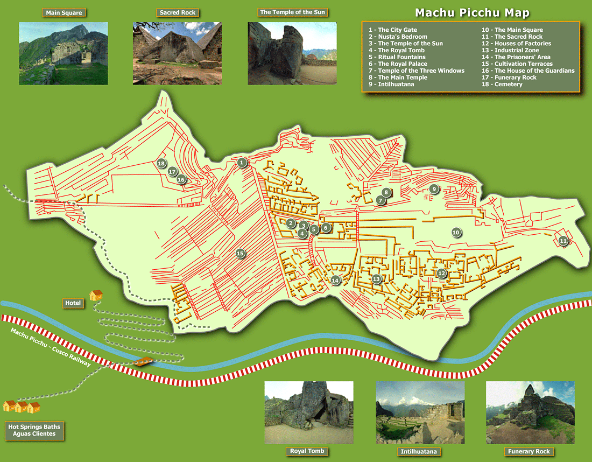
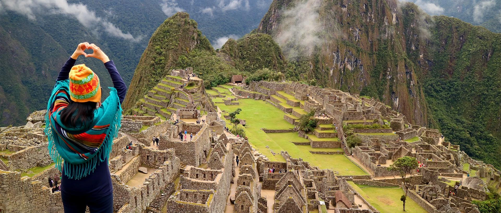

Huayna Picchu Picchu ou Machu Picchu (em quíchua Machu Picchu, "velha montanha"), também chamada "cidade perdida dos Incas", é uma cidadela Inca, da Era pré-colombiana, bem conservada, localizada no topo de uma montanha, a 2 400 metros de altitude, no vale do rio Urubamba, atual Peru.
Foi construída como no início do século XV, por volta de 1420, sob as ordens de Pachacuti. O local é, provavelmente, o símbolo mais típico do Império Inca, quer devido à sua original localização e características geológicas, quer devido à sua descoberta tardia em 1911. Apenas cerca de 30% da cidade é de construção original, o restante foi reconstruído. As áreas reconstruídas são facilmente reconhecidas, pelo encaixe entre as pedras. A construção original é formada por pedras maiores, e com encaixes com pouco espaço entre as rochas.
Fonte: Wikipedia
Machu Picchu se encontra a 13º 9' 47" de latitude sul e 72º 32' 44" de longitude oeste. Faz parte do distrito de mesmo nome, na província de Urubamba, no Departamento de Cusco, no Peru. A cidade importante mais próxima é Cusco, atual capital regional e antiga capital dos incas, a 130 quilômetros dali.
A 2 400 metros de altitude, Machu Picchu está situada no alto de uma montanha, cercada por outras montanhas e circundada pelo rio Urubamba, o que lhe proporciona uma atmosfera única de segurança e beleza. O santuário foi intencionalmente construído em um local onde falhas tectônicas se encontram.
A partir da cidade de Cusco a viagem de trem leva três a quatro horas, até chegar ao povoado de Águas Calientes. Neste local há microônibus frequentes, que levam cerca de 30 minutos para chegar a Machu Picchu, pela rodovia Hiram Bingham (que sobe a encosta do cerro Machu Picchu desde a estação ferroviária "Puente Ruinas", localizada no fundo do cânion. A mencionada rodovia, porém, não está integrada na rede nacional de rodovias do Peru. Nasce no povoado de Águas Calientes, que por sua vez só é acessível por ferrovia (3 a 4 horas desde Cusco). A ausência de uma rodovia direta a Machu Picchu é intencional e permite controlar o fluxo de visitantes à região, por ser uma reserva nacional. Isso, porém, não impediu o crescimento desordenado (criticado pelas autoridades culturais) de Águas Calientes, que vive do turismo e para o turismo, pois há hotéis e restaurantes de diferentes categorias no local.
Seguindo o Caminho Inca em uma caminhada de quatro dias e chegar a Machu Picchu pela "porta do Sol". Para isso é necessário tomar o trem até ao km 82 da ferrovia Cusco-Águas Calientes, de onde parte o caminho a pé.[17] Pode-se realizar a trilha completa, caminhando os 45 km em quatro dias com pernoita nos acampamentos com infraestrutura, ou fazer a trilha curta, que pode ser realizada de duas maneiras: em dois dias, com pernoite no alojamento próximo às ruínas de Wina Wayna, chegando à Porta do Sol pela manhã ou caminhar os 12 km num único dia, chegando em Machu Picchu no final da tarde.
Em 1983, a UNESCO declarou Machu Picchu como Patrimônio Mundial da Humanidade. Em 2007, foi eleito como uma das Novas Sete Maravilhas do Mundo Moderno em uma votação global organizada pela New7Wonders Foundation.
Fonte: Wikipedia
